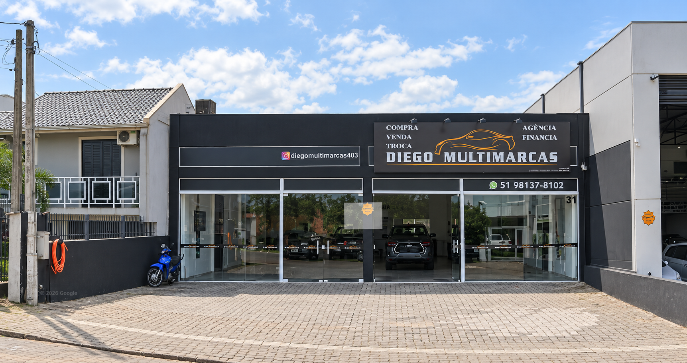

01 /
Encontre a sua
Explore a seleção, salve suas favoritas e veja qual combina com o seu momento.
Explorar caminhonetesForça para os seus planos.
Confiança para o seu próximo caminho.
Encontre a que combina com você.
O próximo capítulo começa aqui.
Tente outra cor ou limpe os filtros para explorar a seleção.
Seleção demonstrativa baseada no Instagram da loja. Disponibilidade, versão, ano e valores a confirmar com o Diego.
Uma caminhonete acompanha trabalho, família e novos caminhos. A escolha merece atenção em cada detalhe.
Na Diego Multimarcas, você conversa com quem vive esse universo. Da primeira dúvida à sua próxima Hilux, o atendimento é próximo e a conversa é direta.
Caminhonetes no centro de tudo.
Converse diretamente com o Diego.
Conheça a nossa fachada, explore a região
e venha conversar pessoalmente.

Fonte: Google Street View · Tratamento visual com IASua próxima Hilux merece
uma visita pessoal.
Rua João Aleixo Hennemann, 31
Moinhos d’Água · Lajeado, RS
CEP 95904-354
Uma boa escolha começa com clareza.
E continua com uma boa conversa.
Explore a seleção, salve suas favoritas e veja qual combina com o seu momento.
Explorar caminhonetesTem um veículo na troca ou quer financiar? Converse sobre as possibilidades para você.
Combine uma visita em Lajeado, veja os detalhes e dê o próximo passo com confiança.
Combinar uma visitaFale com o Diego. Sua próxima Hilux pode estar nessa conversa.